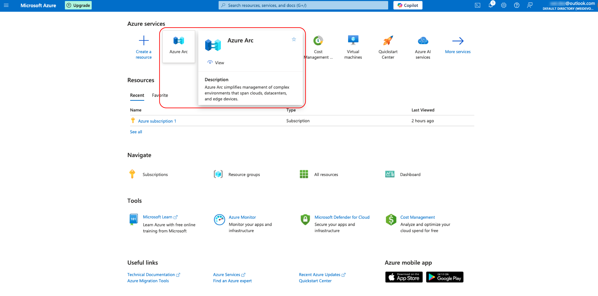
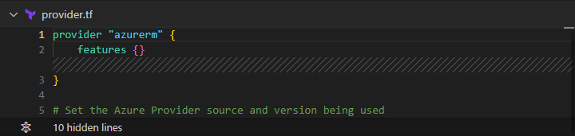
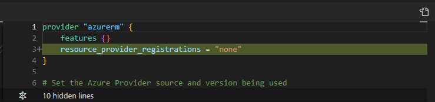

Deploying Resource Group using CI/CD with Terraform and Github Action
Table:
Step 01 | Setting up Service Princple
In order to let GitHub Workflow and Terraform to work with Azure Resource Management, the CLIENT_ID, CLIENT_SECRET_VALUE, TENANT_ID and SUBSCRIPTION_ID will have to be assigned in the workflow files. Therefore, setting up a Service Principle with a AZ Subscription assigned is the first step of the RG creation. The 2 methods I know of setting up the Service Principle is through EntraID App Registration & Azure Arc. I have tried the EntraID App registration with an Azure Enterprise Tenant and tried the Azure Arc with my personal Azure free account. Here I am demonstrating the later method:
1. Finding Azure Arc
Go to Azure Portal and find Azure Arc in the Azure services catalogue.
2. Adding a Service Principle
After entering the Azure Arc page, navigate to Service Principle option under Management tab in the left Pane of the portal page. Click the “+Add” option.

3. Configuring The New Service Principle
After the Add New Azure Arc Service Principle (a.k.a SPN) comes up, filling the name of the SPN you like. Choosing Subscription for the scope assignment level as we are trying to create a Resource Group (RG), therefore we don’t have any resource group we would like to use yet. For the expiry date, I chose 3 months time for general reason.

4. Finding the Credential Values
After creating the SPN, you will then have the CLIENT_ID, CLIENT_SECRET_VALUE, TENANT_ID(Manually creating one by clicking into the Client Credentials if Secret Value creation is not included in the SPN configuration process.)

5. Finding the Subscription ID
For the Subscription, it will be found at the Subscription management page.


Step 02 | Hiding the Azure User Credential in Github Secret
1. Hiding the SPN Values on GitHub
Go to the repository where I am storing my terrafrom and workflow files and have the 4 variables I need for interacting with Azure assigned as Secrets for Github Actions.


2. Setting Up Automation workflow
Configuring the workflow file for triggering GitHub Action.
workflows.yml
Step 03 | Preparing Terraform files for Deploying Resource Group
1. Configuring the main terraform file
main.tf
2. Configuring the terraform provider file
provider.tf
Step 04 | Run the GitHub Workflow
Commit & Sync the changes to the repository, the workflow will then be triggered.


💡 Please refer to my GitHub repository to look at the full code.
troubleshoot Notes
Issue 01 | Wrong Authentication Configuration
Error: No subscription found.

Fix:
In the beginning, I used the service principle created through App Registration under the Microsoft Entra ID and the credentials cant be captured.


I then checked one Azure portal and discovered that Service Principle can also be set-up under Azure Arc. I set up the SPN and changed the value under the GitHub Action secret. This time is works and the authentication was able to be pushed through.


Further Investigation:
At the moment I am still investigating why it wouldn’t work SPN set up with App Registration. Few direction for testing:
User privilege - at the moment there are no role has been assigned under my Azure Arc SPN, and I am the contributor to the App Registration SPN. I am the owner to both. But I am able to login to Azure Cli with former method, and was failed to login in with the later method.
Difference of the 2 methods - From what I have understood, Azure Arc seems is more for multiple cloud resource management. The app registration is more specific app and function oriented. It makes more sense to go with SPN created by Azure Arc as I am aiming for creating an Azure cloud resource. But more need to be investigated.
Issue 02 | No permissions to register Resource Providers.
Error:
Terraform does not have the necessary permissions to register Resource Providers. Terraform automatically attempts to register the Azure Resource Providers it supports, to ensure it is able to provision resources.


Fix:
At the moment, I simply disable the Resource Provider Registration by modifying the code in the provider.tf file.
 Further Investigation:
I found out that the error indicates that SPN does not have authorization to perform certain actions over the specified scope. Investigation direction:
Configuring the necessary permissions under the SPN so that the privilege to registering resource provider is assigned
Double checking Azure Resource Provider Registrations documentation and see if re-registering the resource providers is needed.
Issue 03 | Role Assignment is Missing
Error:
The client does not have authorization to perform action 'Microsoft.Resources/subscriptions/ resourcegroups/ read' over scope '/ subscriptions/ ***/ resourcegroups/weichudev_terraform_RG' or the scope is invalid.

Fix:
Using the following command line to assign Contributor role to the SPN.
Note:
I noticed that the Client ID and Object ID that has been mentioned in the GitHub job error message actually means the Object ID of SPN from an Enterprise Application under EntraID which was created at the same time when a SPN was created in Azure Arc. But when assigning the role to the SPN, the Object ID from the Azure ARC is still targeted which is stored in the GitHub Action Secret.